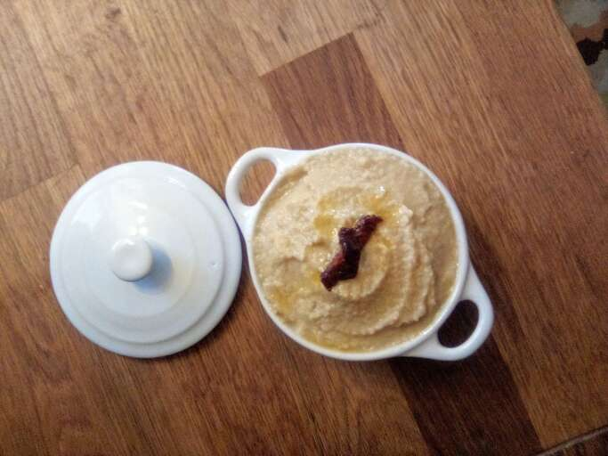

Hummus

Learn how to make homemade hummus with this super easy
recipe that only takes minutes. Great with veggies or pita chips.
Really it's great with anything!
Ingredients
- 1 (15 ounce) can garbanzo beans, drained, liquid reserved 1 tablespoon lemon juice
- 1 tablespoon olive oil
- 1 clove garlic, crushed
- ½ teaspoon ground cumin
- ½ teaspoon salt
- 2 drops sesame oil, or to taste (Optional)
Directions
- Blend garbanzo beans, lemon juice, olive oil, garlic,
cumin, salt, and sesame oil in a food processor; stream
reserved bean liquid into the mixture as it blends until
desired consistency is achieved.
Main Page